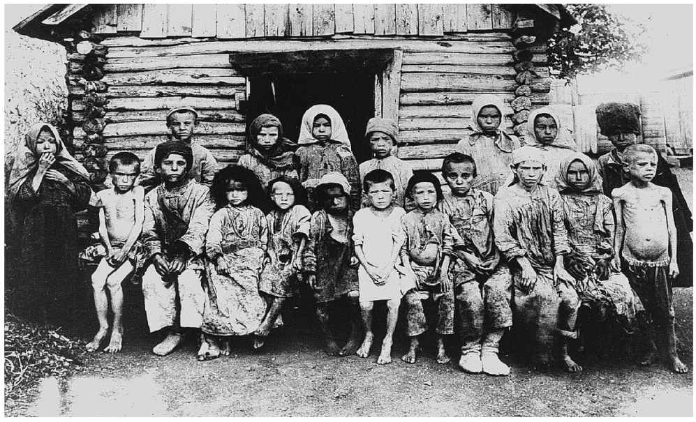

布尔什维克于1918年3月3日签订了条件苛刻的《布列斯特-立陶夫斯克和约》（见第三十六章第四节），希望最终能从战争转到建立社会新秩序这一更合意的任务上来。但是，他们却注定要再打三年仗，以对付反革命和外来干涉。从某种程度上来说，进行反革命的是有产阶级的成员——军官、政府官员、地主和商人——他们出于种种明显的原因而希望摆脱布尔什维克。不过，各种非布尔什维克左派的成员也同样热衷于反革命活动，他们中要数社会革命党人人数最多。他们在需要进行社会革命的问题上同布尔什维克意见一致，但却非常憎恨布尔什维克在革命最终到来的时候垄断革命。他们视布尔什维克1917年11月7日的政变为十足的背叛，尤其是因为1917年11月25日选出的立宪会议中，布尔什维克只占175席，而社会革命党人则占到370席，其他各党派代表占159席。因此，非布尔什维克左派带头组织地下反对活动，而右派分子则领导军队进行从哥萨克地区开始的公开叛乱。

图260 苏联内战期间，饥荒笼罩着农村。这是一组营养不良的儿童在摆好姿势拍照。
这些反布尔什维克集团得到了西方列强的支持和援助，后者这样做是出于各种原因，如布尔什维克为了世界革命所展开的强硬运动。布尔什维克将外国财产收归国有和拒付外债的做法自然也使有势力的既得利益集团开始对其持敌对态度，这些既得利益集团利用他们的影响力来帮助干涉势力和反革命力量。
在这些情况下，俄国边境地区——阿尔汉格尔斯克-摩尔曼斯克北部地区、波罗的海诸省、乌克兰、顿河地区、外高加索和西伯利亚——在《布列斯特-立陶夫斯克和约》签订后不久便成立了几个反革命政府。这些政府除了在某些战线得到西方提供的军事顾问和小股分遣部队，还得到了大量的资金和军用物资。起先，布尔什维克遭到一个又一个失败，其原因仅在于旧的沙俄军队已四分五裂，尚没有别的力量可以取代。国防人民委员列夫·托洛茨基逐步建立起一支新红军。到1918年年底时，人数约达50万。当全国各地发生叛乱、协约国军队在沿海地区登陆时，这支军队只得不时在24条不同的战线上作战（见第744页地图28）。
直到1921年，内战和外国的侵略一直都还在一起蹂躏俄国。但令人意外的是，最后红军却出于各种原因取得了胜利。也许最重要的原因是，布尔什维克在争取农民群众的支持方面通常做得更成功。不过这并不意味着布尔什维克已经说服俄国农民赞成马克思主义意识形态。实际上，大多数农民对红军和白军都极其不满，他们宁愿独自待着。但在不得不作出选择时，他们常常决定支持红军，他们认为，红军站在他们这一边，允许他们保留从地主那里夺得的土地。
农民和布尔什维克
英国工党秘书C. R. 布克斯顿于1920年6月访问了俄国。他的关于俄国农民态度的报告，解释了布尔什维克取胜的原因，尽管他们只占俄国总人口的少数。*
接待我的主人名叫亚历山大·彼得维奇·埃米连诺夫。他属于俄国的“中农”，他们占全村人口的绝大多数。大约有五分之一的人被看作“贫农”。人们告诉我，“富农”仅有四五个……
革命前接待我的主人有8英亩田地——在该地区中居平均水平。现在，他至少拥有85英亩的田地。这是惊人的事实，随着旅途的颠簸，我在心中反复考虑这个问题。这的确很惊人，因为接待我的主人的情况是一个类型，这个类型的人不是数以千计，而且是数以百万计……
“看那边，”埃米连诺夫指着村边无边无际、连绵起伏的大平原说，“所有这些以前都是地主的土地。”……
“谁拥有这些土地？”我问道。
“各种各样的地主。有一个是哥萨克人，有两个是萨马拉商人。有一个是德国人，名叫施密特，他从皇帝那里买了这些土地。有些土地归修道士所有。有一处是沙皇皇后玛丽亚·费奥多罗芙娜的地产。”
“他们现在怎么样了？”
“他们几乎都跑光了，”他用一种平淡的口吻回答道，“有些人还在萨马拉。但我想，他们大多数人都离开了俄国。”……
“农民们现在对所有这些是什么看法？”我问埃米连诺夫。
“革命是一件好事情。每个人都赞成革命。他们不喜欢共产党，但他们喜欢革命。”
“他们为什么不喜欢共产党？”
“因为他们老是使我们烦恼。他们是城里人，不了解这个国家。委员们——有权有势的人——接连不断地到来。我们不知道如何应付他们。新的法令总是不断地出台。人们都糊涂了。你刚搞懂了一个法令，另一个不同的法令又出来了。”
“这里的大多数人属于哪个党派？”
“哪个党派也不是。他们是无党派人士。”
根据我的判断，农民们的普遍态度是他们在土地问题上很感激苏维埃政府；他们赞同“人人平等原则”；他们经常把“真正的”共产主义者当成一种理想的人来谈论。但是，他们经常抱怨生活必需品的缺乏，抱怨强制性的捐献，担心持续不断且常常难以理解的法令和要求。他们认为政府应对所有这些弊病负责，也认为农民处在一个比城里人低几分的位置。
然而，尽管抱怨不断，如果有机会选择，一边是高尔察克政府，一边是苏维埃政府，农民们还是会毫不犹豫地选择后者。
他们赞成革命，而目前苏维埃政权就是革命的体现。他们抱怨它，咒骂它，但是，当有机会推翻它时，他们又说“不”。
* C. R. Buxton, In a Russian Village（Labour Publishing Co. 1922）, pp. 14-15，19，21，26-27，47-48.
回想起来，长期的内战和干涉对相关的所有党派都是一场灾难。它使从波罗的海到太平洋的俄国农村荒废，使俄国人民大批死于横祸、饥饿和疾病。同样严重的是新成立的苏联与西方世界之间的关系也在恶化。苏维埃领导人加深了“资本主义包围”这种马克思主义式的担忧，而西方政治家则对1919年建立的共产国际的无用宣言过于认真。这种相互的不信任既深刻又持久，从而毒化了随后10年的国际关系，大大促成了第二次世界大战的到来。